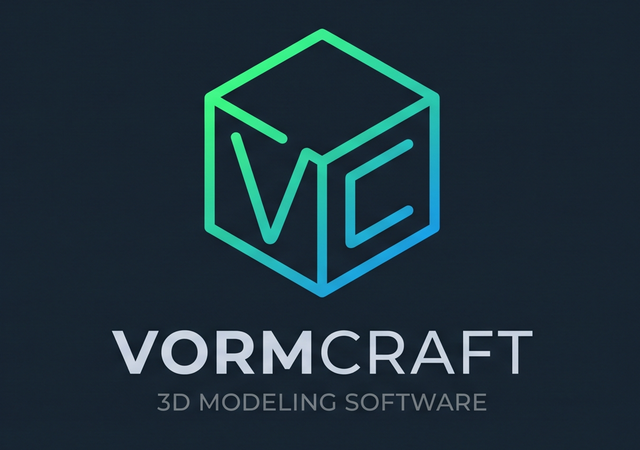
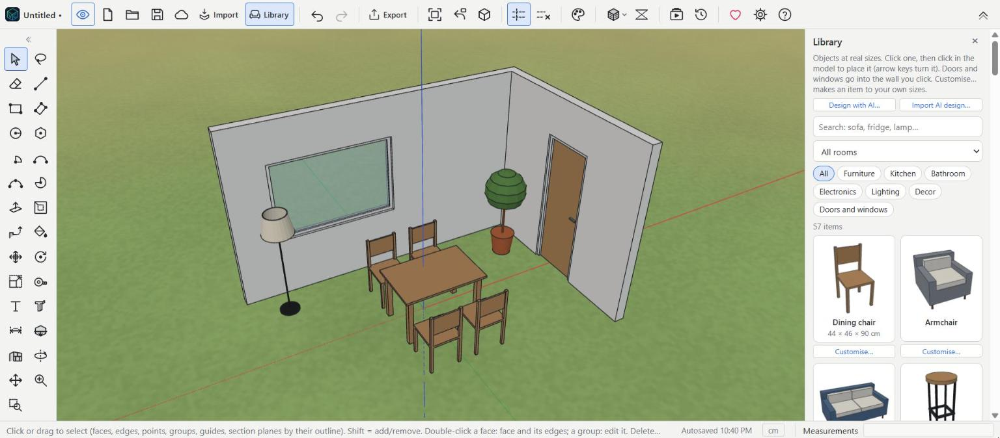

A free, fast, direct 3D modeler: draw a shape, grab a face, push it.

What it is
VormCraft is a push/pull 3D modeling program for woodworking, architecture sketches, 3D printing and handing models on to CAD/CAM. There is no timeline and no constraint solver: you draw on faces, push and pull them, and the model follows. It is free, with no account and no ads, and its source code is open.
Draw and push
Lines, rectangles, circles, polygons and arcs on any face or on the ground. Push/Pull a face to add or cut material; push through a solid and it is cut cleanly.
Exact sizes
Every tool takes typed values, in millimetres, centimetres, metres, inches or feet. Snapping to corners, midpoints, edges and the red, green and blue axes.
Shape it further
Move, Rotate and Scale whole objects, faces, edges or single points; the faces around them follow. Offset, Follow Me, groups, linked components, paint and saved scenes.
Bring it in, send it out
Import SketchUp, OBJ, STL and DXF files. Export STL for 3D printing and OBJ for other programs.
A Library of objects
57 ready-made objects, from tables and chairs to doors and windows. Many can be customised to your sizes, and doors and windows cut their own opening in the wall.
Walls and sections
Draw walls at a set thickness, cut through the model with a section plane, and add dimensions, labels and 3D text.
Design with AI
Describe what you want to any AI chat, then import the design it writes. VormCraft checks it and shows a preview first. VormCraft never contacts an AI itself.
Never lose work
Autosaved recovery copies, a version history and undo that still works after reopening a design.
Save to Google Drive
Optionally save and open designs in your own Google Drive, and keep an autosaved copy there. VormCraft can only see the files it saved.
Where it runs
- Windows: download the installer. It updates itself and opens
.vormfiles with a double-click. - Linux: AppImages for ordinary PCs and for ARM computers such as a Raspberry Pi 5, on the GitHub Releases page. They update themselves like the Windows app.
- Mac and Chromebooks: open vormcraft.app in Chrome, Edge, Safari or Firefox. In Chrome or Edge you can install it as an app that works offline.
- VormCraft is made for a keyboard and mouse. Phones and touch-only tablets are not well supported yet.
Your privacy
Your designs stay on your device, or in your own Google Drive if you connect it. VormCraft has no accounts, analytics or tracking. Read the Privacy Policy and Terms of Use.
Who makes it
I'm Ben Dobbs, a maker. In 2012 I joined the maker movement, bringing my skills as a mechanic together with 3D printers and CNC machines. Today I design products, parts for 3D printing and CNC work, simple furniture and pieces for my laser cutter.
VormCraft started out of need and frustration. Many design tools are free, but not for commercial use. Even as a hobbyist that feels risky: the moment a hobby earns some money, it becomes commercial. Paying hundreds of dollars a year for a program I only use now and then made no sense, and the restricted free versions never felt right. So I set out to make the tool I wanted: free for everyone, for any purpose, including work that earns you money.
I'm not a trained programmer. I've tried to learn over the years, and I've written small programs for Arduino, but writing software on this scale has always been a struggle for me. VormCraft is written with Claude Code, an AI coding assistant. I decide what it should do, how it should work and feel, and I test it on my own projects. The AI helps write the code. All of that code is open on GitHub for anyone to read.
The name comes from vorm, the Dutch word for shape or form. VormCraft is made in Indonesia, where I'm a naturalised citizen.
Free, and staying free
VormCraft is free and open source under the MIT licence, for personal and commercial use alike. Version 1.0 arrives on 1 January 2027; after that I'll keep fixing problems and adding what people ask for most. If it is useful to you, you can support its development. Found a problem or have an idea? Tell me on GitHub, or email info@vormcraft.app. I read everything.